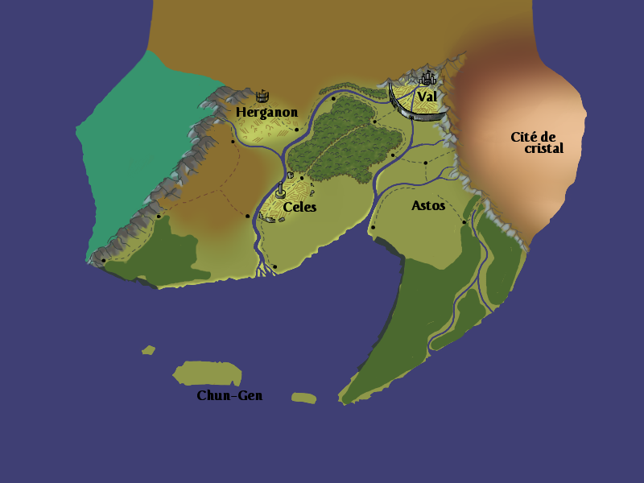

L'univers de Lyrium
Introduction
Le monde de Lyrium
Races et cultures
Magie et technologie
Us et coutumes
Économie
Les acteurs de Lyrium
Personnages emblématiques
Factions et guildes majeures
Le bestiaire de Lyrium
Appendices
Appendice A : l'Histoire de Lyrium
Appendice B : cartographie
Carte temporaire des royaumes de Lyrium.

Appendice C : glossaire
Hiérarchisation proposée par Scott Hungerford, dans The Kobold guide to worldbuilding, Kobold Press.